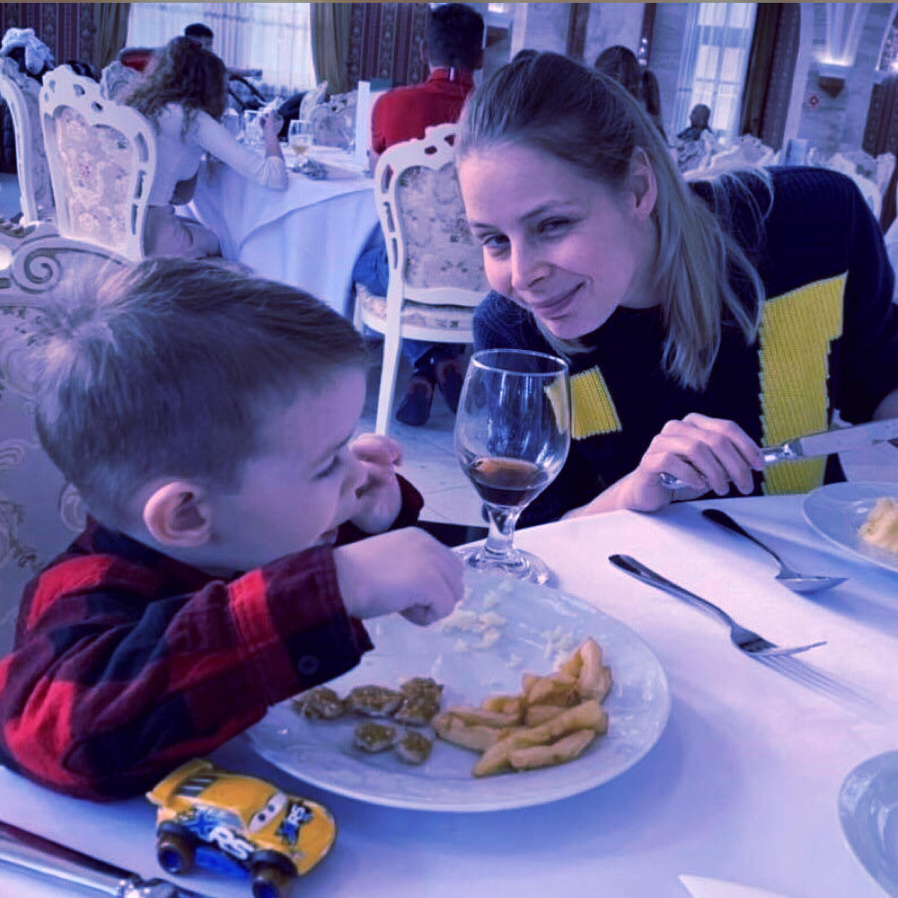

Boldog Anyák Napját ♥
Nadányi Zoltán: Anyu
Tudok egy varázsszót,
ha én azt kimondom,
egyszerre elmúlik
minden bajom, gondom.
Ha kávé keserű,
ha mártás savanyú,
csak egy szót kiáltok,
csak annyit, hogy: anyu!
Mindjárt porcukor hull
kávéba, mártásba,
csak egy szóba került,
csak egy kiáltásba.
Keserűből édes,
rosszból csuda jó lesz,
sírásból mosolygás,
olyan csuda-szó ez.
„Anyu, anyu! Anyu!”
hangzik este-reggel,
jaj de sok baj is van
ilyen kis gyerekkel.
"Anyu, anyu, anyu!"
most is kiabálom,
most semmi baj nincsen,
mégis meg nem állom.
Csak látni akarlak,
Anyu, fényes csillag,
látni, ahogy jössz, jössz,
mindig jössz, ha hívlak.
Látni sietséged,
angyal szelídséged,
odabújni hozzád,
megölelni téged.
A Te kicsi kincsed ;)
